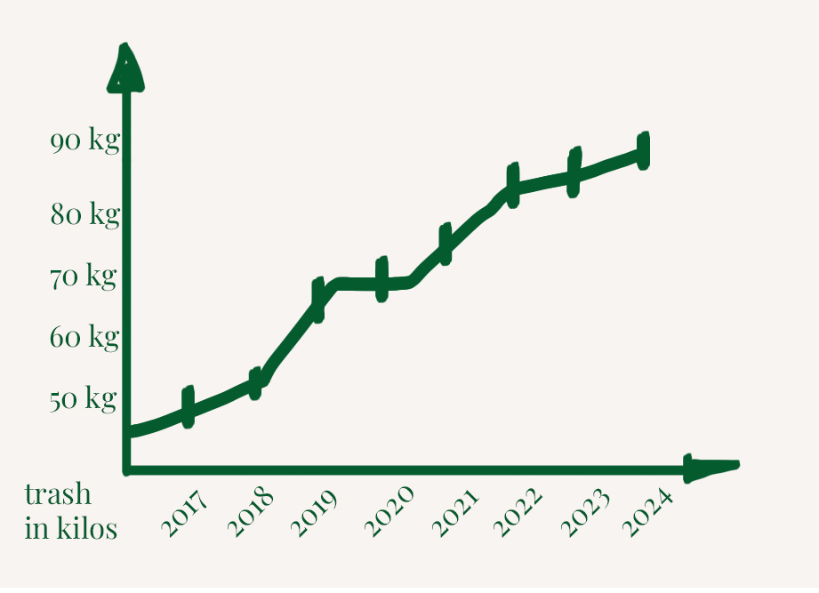

Each year we try and keep records of how many materials we fish from our loved canals. We kept this record since 2018, this displayed graph above shows our annual effort of the year 2023. We endorse to keep the dream alive and keep the canals clean! Every little bit helps.
Our comrads from the Zoutkeetsgracht has had some trouble recently, due to big changes in the flow of the river het IJ, piles of trash have found their way into the canals of the neighbourhood. Luckily thanks to the support from the group Plastic Whale we could counter this.